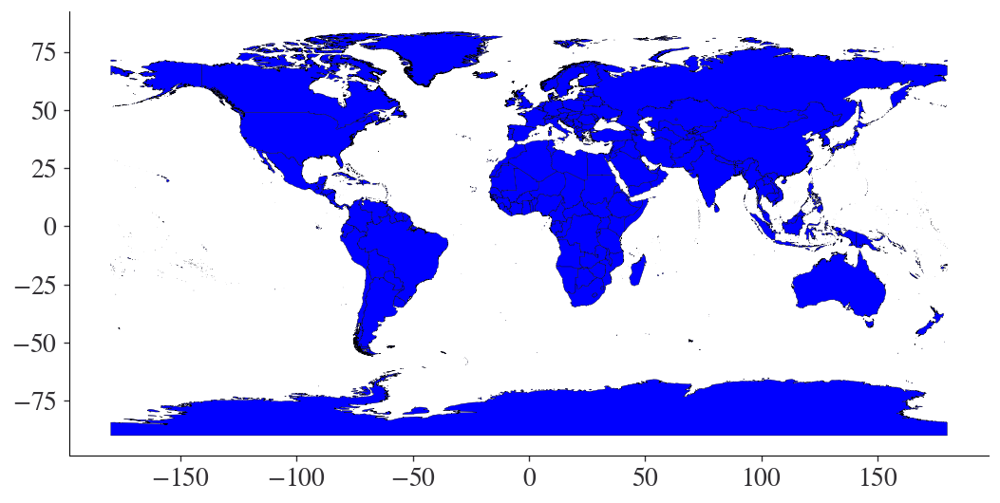
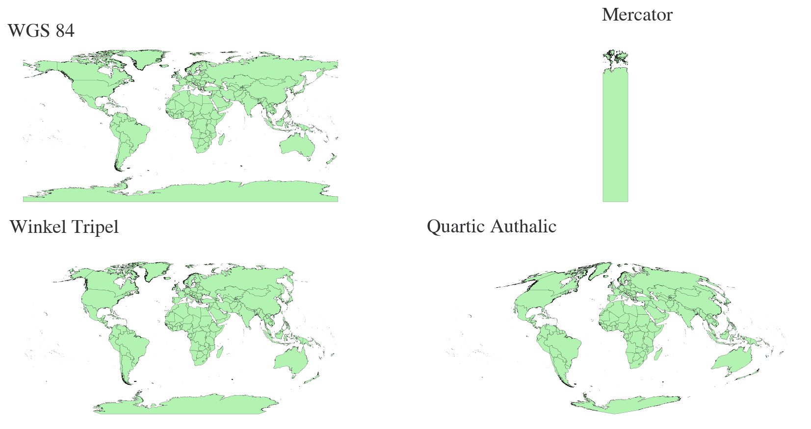

# Start with our basic imports
import matplotlib.pyplot as plt
import pandas as pd
import os
import numpy as np
import geopandas as gpd
from pathlib import PathGeopandas and Vector Data
Geopandas and Vector Data
- We will be using Geopandas to work with our second type of data: vectors!
- A typical spatial workflow will involve both vectors and what we talked about last class(es): Rasters.
Setting up Geopandas and Data
For this lecture, we’re going to use great open-source content from our textbook.
- This will even include getting data from the book site!
- Below, you will see that we reference a file on the internet. No need to download!
# Set max rows displayed for readability
pd.set_option("display.max_rows", 6)
# Plot settings
plt.style.use(
"https://github.com/aeturrell/coding-for-economists/raw/main/plot_style.txt"
)
# For this chapter, some bespoke settings:
plt.style.use(
{
"axes.autolimit_mode": "data",
"patch.linewidth": 0.2,
"figure.figsize": (10, 8),
"figure.dpi": 125,
}
)What is a Geopandas dataframe
Quite literally, GeoPandas is a combination of geo and pandas so the good news is that everything you know about using pandas dataframes can be re-used here for geospatial data. The geo part adds functionality for geo-spatial data.
Loading a vector file
First, we need some geo-spatial data to analyse.
There are several different file formats for geo-spatial data, such as Shapefile (.shp), GeoJSON/JSON, KML, and GeoPackage.
Shapefiles used to be the standard way, but they were AWFUL.
- Dated methods, slow, proprietary, ESRI.
The new standard (though not everyone has switched) is Geopackage (.gpkg) for most vector data applications.
You should have downloaded countries_iso3.gpkg

# Set our paths like normal
data_directory = '../../../../data'
vector_data_directory = os.path.join(data_directory, 'vector_data')
countries_vector_filename = 'countries_iso3.gpkg'
countries_vector_path = os.path.join(vector_data_directory, countries_vector_filename)
# Read the vector file off disk
gdf = gpd.read_file(countries_vector_path)
# Print the first three rows
gdf.head(3)| id | iso3 | nev_name | geometry | |
|---|---|---|---|---|
| 0 | 1 | ABW | Aruba | MULTIPOLYGON (((-69.99694 12.57758, -69.93639 ... |
| 1 | 2 | AFG | Afghanistan | MULTIPOLYGON (((74.54235 37.02167, 74.54742 37... |
| 2 | 3 | AGO | Angola | MULTIPOLYGON (((13.07370 -4.63532, 13.06533 -4... |
What is a GeoDataFrame?
- The tabular data is identical to a regular Dataframe, but it has that Geometry column
- Also a big difference is by being a GeoDataFrame, it has many other features, such as a CRS (coordinate reference system)
- The gdf object also has vector-specific algorithms attached to it
- But first, let’s look at it in QGIS
Viewing a vector file in QGIS
- Load
countries_iso3.gpkginto QGIS

Make it pretty with Symbology
Double click the countries_iso3 layer in the Layers view
- Then select the Symbology tab

There are tons of options, but I suggest the OutLine Blue.

Can zoom and such

Polygons are connected to each row in the attribute table
Open the attribute table
Right click on countries_iso3 in the layers tab
Select Open Attribute Table

This should almost look like what we loaded in Python earlier!
But now it’s “missing” the geometry column
- It’s not actually missing, it is just rendered spatially instead of being put in this table.
Each row in the Attribute Table corresponds to one “Shape” within the Geometry column
- However, it will be a “Multipolygon” not a simple polygon because of non-contiguous shapes (e.g. islands)

In-Class Exercise: Play around with Symbology
Try out the different symbology schemes to add a unique color to each country based on the value stored in the ID column.
- Hint, change the type of symbology (at the top) to categorized.


Just like with Rasters, you could spend a whole semester doing GIS work on Vectors using the menus in QGIS
But we’re aiming higher!
- Let’s do this all in Python

Plotting with Geopandas
We’ve already loaded the gdf above, and we printed out the table
But what about visualizing it in a more useful way
Just like pandas, Geopandas has some built-in plotting functionality
# Use matplotlib via Geopandas to plot the vector
gdf.plot(color="blue")
Selecting subsets
- Suppose you want to just plot the USA
- The magic of Geopandas is you can do it by selecting a subset, just like in Pandas
# Select the USA
usa = gdf[gdf["iso3"] == "USA"]
usa.plot()
Spatial coordinate references
- Just like with Rasters, these have a CRS:
- It is saved as an attribute on the GDF.
# Print the CRS
gdf.crs<Geographic 2D CRS: EPSG:4326>
Name: WGS 84
Axis Info [ellipsoidal]:
- Lat[north]: Geodetic latitude (degree)
- Lon[east]: Geodetic longitude (degree)
Area of Use:
- name: World.
- bounds: (-180.0, -90.0, 180.0, 90.0)
Datum: World Geodetic System 1984 ensemble
- Ellipsoid: WGS 84
- Prime Meridian: GreenwichChange the CRS
- Let’s create a more advanced plot that illustrates the different projections we might use
proj_names = ["WGS 84", "Mercator", "Winkel Tripel", "Quartic Authalic"]
crs_names = ["EPSG:4326", "EPSG:3395", "+proj=wintri", "+proj=qua_aut"]
fig, axes = plt.subplots(
nrows=2, ncols=2, figsize=(12, 6), dpi=150, sharex=False, sharey=False
)
for i, ax in enumerate(axes.flat):
gdf.to_crs(crs_names[i]).plot(ax=ax, color="#b2f3b2", linewidth=0.1)
ax.set_title(proj_names[i])
ax.axis("off")
plt.tight_layout()
plt.show()
Get the centroid
- For better or worse, almost all of “spatial economics” ignores vector data
- Instead, if there is space involved, it uses the centroid of the polygon
- This will be used for, e.g., calculating distance between a village and a forest
- We can get the centroids out of our GDF and plot them
gdf["centroid"] = gdf.centroid
fig, ax = plt.subplots()
ax.axis("off")
gdf.boundary.plot(ax=ax, lw=0.2, color="k")
gdf["centroid"].plot(ax=ax, color="red", markersize=15)
plt.show()C:\Users\jajohns\AppData\Local\Temp\ipykernel_27288\636296137.py:1: UserWarning: Geometry is in a geographic CRS. Results from 'centroid' are likely incorrect. Use 'GeoSeries.to_crs()' to re-project geometries to a projected CRS before this operation.
gdf["centroid"] = gdf.centroid